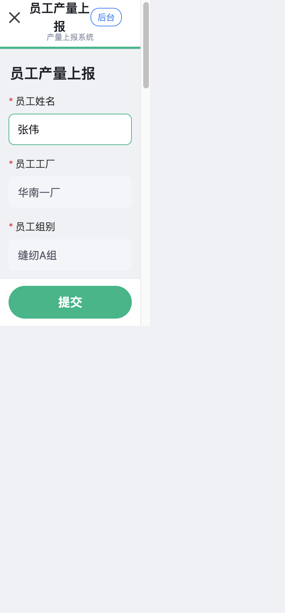
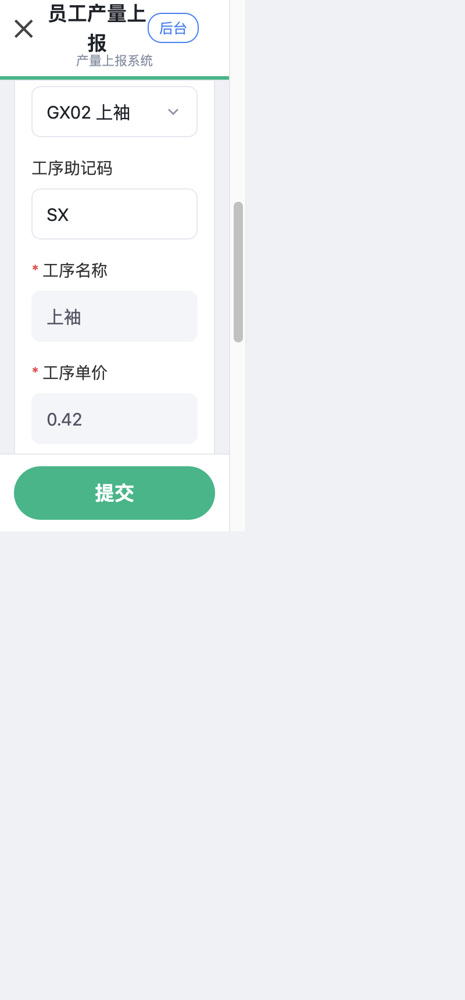
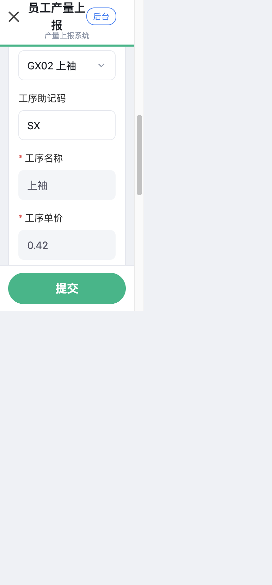
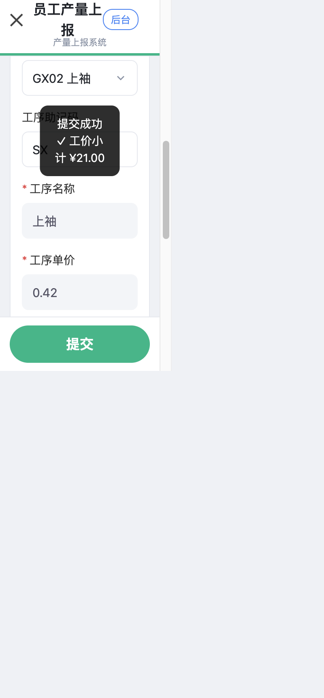
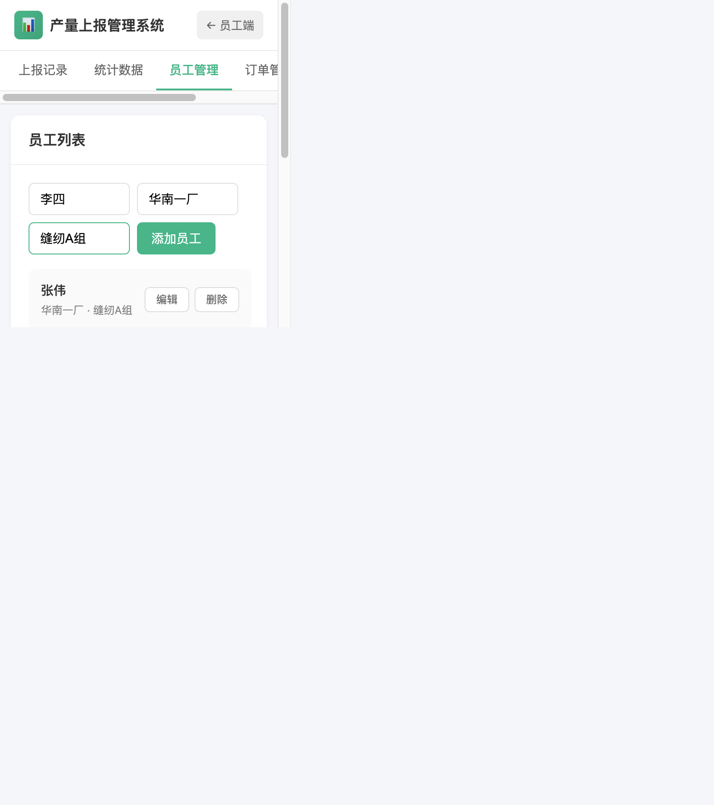
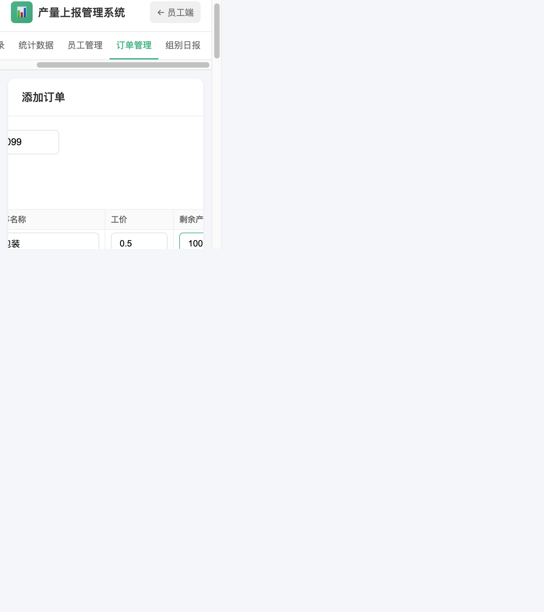

📱
微信小程序
打开微信 → 搜小程序或点体验版链接
🌐
手机浏览器
打开组长发的网址链接
每天花 1 分钟，把自己的产量填上去就行
两种方式任选一个，数据是通的
输完名字后，工厂和组别会自动带出来，不用自己填

选好工序后，工价和"剩余产量"会自动显示，照着填产量就行

填超了会马上出现红字提醒，按提示改小一点再提交

出现"提交成功"和你的工价小计，就说明数据已经交上去了

用浏览器打开后台网址进入（网址找管理员要，不要外传）
后台 → 「员工管理」→ 填姓名、工厂、组别 → 点"添加员工"。工号不用填，系统自动生成

后台 → 「订单管理」→ 填订单号（必填）→ 在下表填每道工序代码、名称、工价、剩余产量 → 点"添加订单"。工序多就点"＋ 添加工序"
